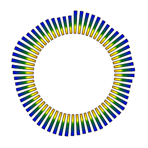

Главная → Круговой эквалайзер
Круговой эквалайзер – графический элемент для визуализации амплитуды сигнала в зависимости от частотных характеристик (рис. 1).

рис. 1 - Сегментный эквалайзер.
Для создания объекта типа SegmentEqualizer необходимо подключить следующие скрипты:
Для создания массива сегментов в функцию-конструктор передаются основные параметры, которые используются для создания базового, или опорного, сегмента:
id - идентификатор эквалайзера в виде текстовой строки.
context - контекст типа CanvasRenderingContext2D для отрисовки объекта.
cx - координата X центра базового сегмента.
cy - координата Y центра базового сегмента.
r_in - внутренний радиус базового сегмента.
thickness - толщина базового сегмента.
init_angle - начальный угол базового сегмента в градусах. Может принимать отрицательные значения. angle - угол базового сегмента в градусах.
Примеры использования различных свойств и методов объекта.
values - массив коэффициентов в диапазоне [-1; 1], определяющих форму волны.
Для визуализациии формы волны коэффициенты применяется к толщине сегментов массива.
gradient - градиент заливки типа SegmentGradient.
background - цвет заливки (применяется, если не задан градиент заливки).
border_width - толщина границ.
border_color - цвет границ.
Границы базового сегмента могут быть заданы отдельно при прямом доступе к нему через свойство base_segment.
segments_count - количество сегментов-элементов массива.
segment_angle - угол сегмента массива (игнорируется, если установлен флаг пропорциональности).
segment_thickness - толщина сегмента массива.
segment_position - позиция сегментов массива. Допустимые значения параметра:"inner" - примыкание к внутренней границе базового сегмента.
"middle" - расположение по середине базового сегмента.
"outer" - примыкание к внешней границе базового сегмента.segment_r_in - внутренний радиус сегмента массива. Игнорируется, если задано свойство segment_position.
start_with - начать размещение объектов на базовом сегменте массива с сегмента или с пустого пространства. Допустимые значения параметра:"segment" - начать с сегмента.
"space" - начать с пустого пространства.
segment_gradient - градиент заливки сегментов массива. Значение типа SegmentGradient.
segment_background - цвет заливки сегментов массива (применяется, если не задан градиент заливки).
segment_border_width - толщина границ сегментов массива.
segment_border_color - цвет границ сегментов массива.
proportional - пропорциональность. Значение true обеспечивает одинаковые углы для элементов массива и расстояний между ними.
full_thickness - полная толщина. Значение true обеспечивает одинаковую толщину элемента массива и базового сегмента.
visible - видимость. Значение true обеспечивает видимость объекта.
segments_visible - видимость сегментов. Значение true обеспечивает видимость элементо вмассива.
in_progress - в процессе. Флаг принимает значение true в процессе анимации.
build() - выполняет основные вычисления формы и внешнего вида базового сегмента и элементов массива с учетом заданных свойств и флагов.
draw() - функция отрисовки объекта.
instanceCopy() - создание независимой копии объекта.
changeValues(values, speed, delay) - функция применения новых коэффициентов values, определяющих форму волны, со скоростью speed и задержкой delay.
События, запускаемые объектом SegmentEqualizer, реализованы с помощью CustomEvent.
В параметре detail.equalizer передается ссылка на сам объект.
segment-equalizer-changed - объект изменен. Событие запускается, если изменен один из элементов массива или базовый сегмент.
Главная → Круговой эквалайзер